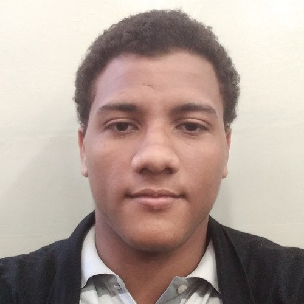

Currículo

Nome Completo
Isaque Samir Bezerra de Melo Silva
Auxiliar Técnico de Informática
Email: isaquesamirbezerra@gmail.com
Telefone: (15) 988163032
Localização: Cidade: Buri, Estado: Sp
Resumo Profissional
Técnico de Informática com mais de 5 anos de experiência na área de suporte técnico, manutenção de computadores e redes, além de conhecimento em programação e desenvolvimento web.
Experiência Profissional
-
Empresa XYZ - Técnico de Suporte (2018 - Presente)
- Suporte técnico a usuários e manutenção de equipamentos.
- Gerenciamento de redes e configuração de servidores.
- Desenvolvimento de scripts para automatização de processos.
-
Empresa ABC - Assistente de TI (2015 - 2018)
- Instalação e configuração de software e hardware.
- Manutenção preventiva e corretiva de computadores.
- Atendimento ao cliente e suporte remoto.
Educação
- Instituição de Ensino - Curso Técnico em Informática (2013 - 2015)
Habilidades
- Manutenção de Computadores
- Configuração de Redes
- Programação (JavaScript, Python)
- Suporte Técnico
- Desenvolvimento Web
Projetos realizados
Boletim do Curso Técnico